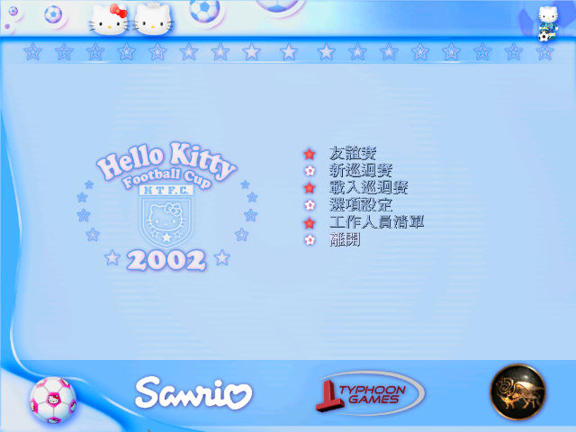
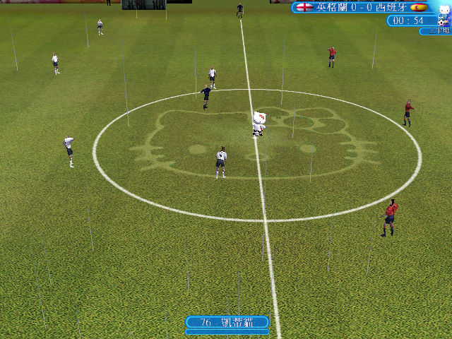

名稱：Hello Kitty歡樂盃足球賽／凱蒂貓世界盃足球2002／2002年世界盃3D足球賽Kitty珍藏版 (Hello Kitty Football Cup 2002／Hello Kitty Football Club 2002，中文版) 簡介：Sanrio授權Enigma在2002年以凱蒂貓角色出品的足球遊戲，由香港Typhoon Games代理 並中文化，由皇統光碟發行 [待補]。   保護：不明

